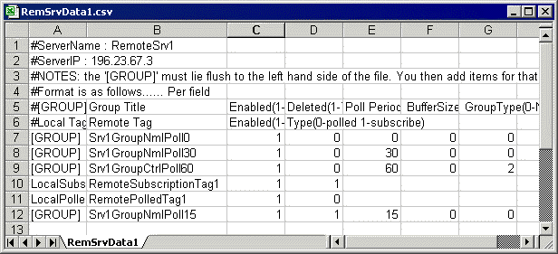

A tag link or tag mapping, specifies the name of the local and the remote Adroit tag, whose values are to be ‘linked’.
This is added to a tag group within a server. For details, see Tag Links.
If it is necessary to bulk configure a large number of tag links at one time, they can be manually edited.
Links are stored together with groups in the user-specified database filename of their applicable Server, specified when adding a server.
This .CSV file is located within the database folder and contains all the specific configuration of the tag groups and their tag links that have been configured within the specific server.

The first 6 lines of the file are comment lines.
The first two lines show both the name and IP address of the server, to which these tag groups and tag links are associated.
The next four lines then provide configuration specific information.
Note: Tag links can only be entered into this file below a configured tag group [GROUP]-entry, to which they are then associated.
The columns, required when configuring a tag link, in the order that they appear in the file: